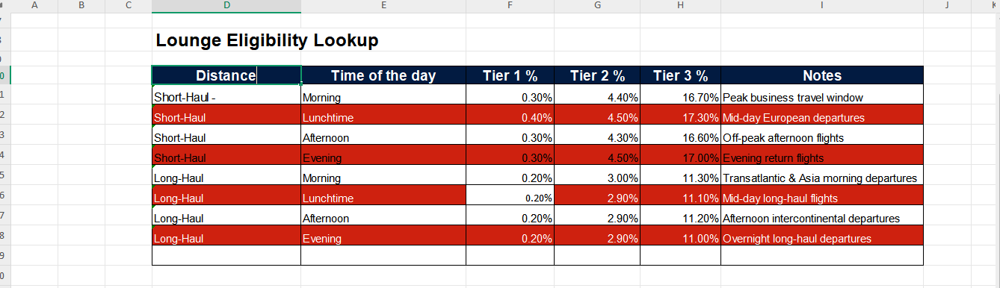
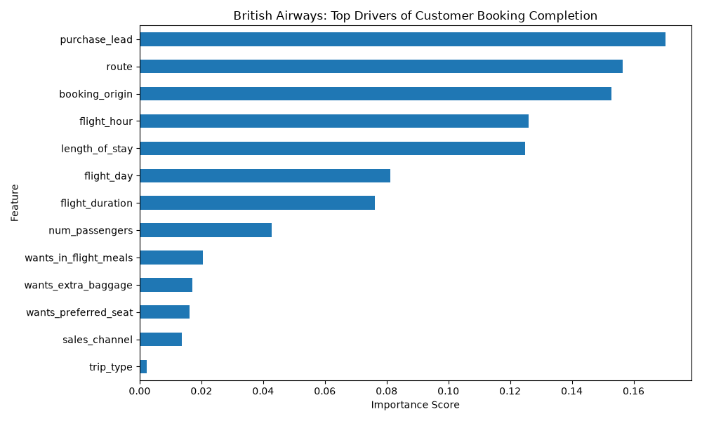
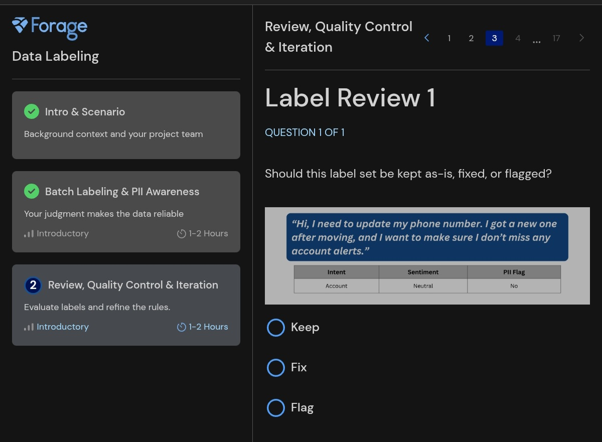
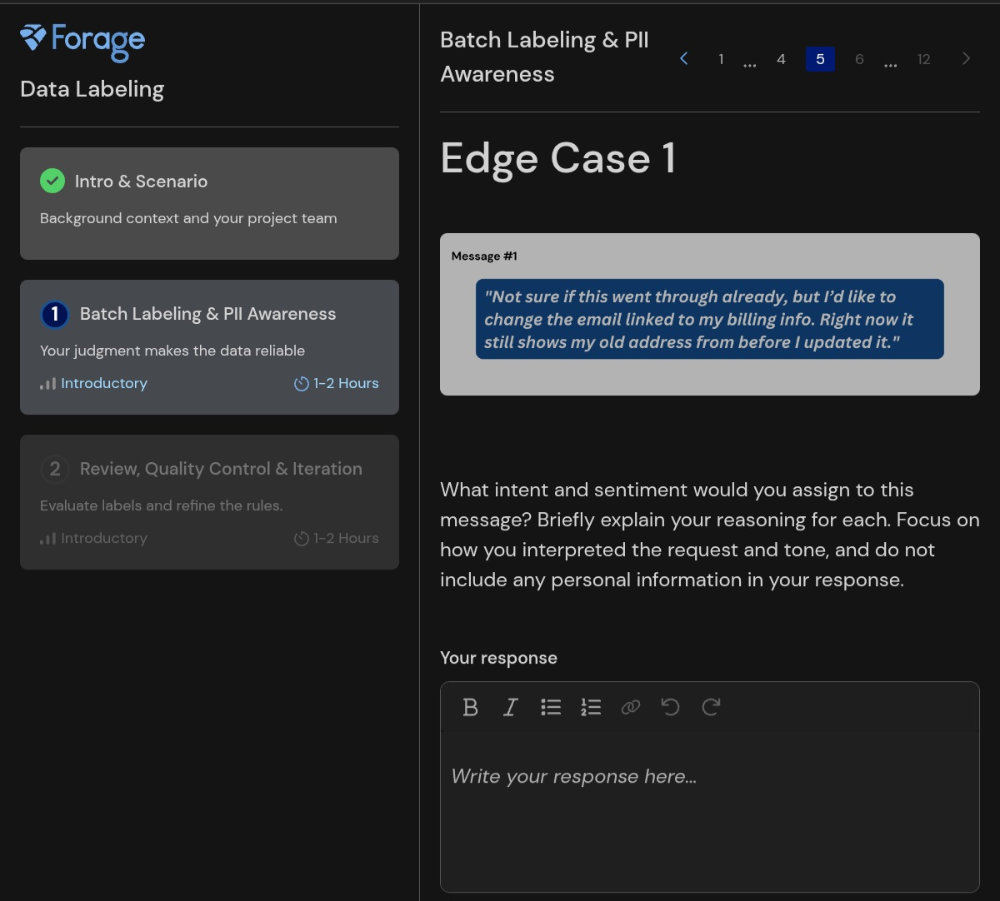
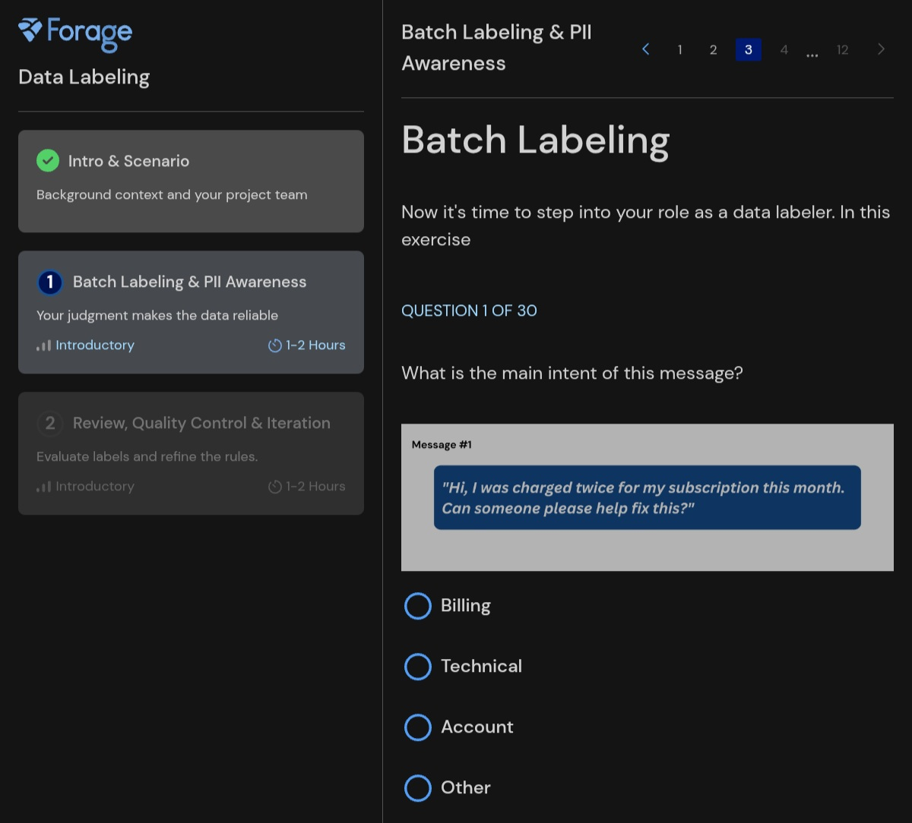

Airport Lounge Demand & Eligibility Model
Un Modèle d'Éligibilité aux Salons d'Aéroport
The Business Challenge
Le Défi Commercial
British Airways required a flexible, scalable methodology to forecast VIP lounge demand at Terminal 3. With fluctuating flight schedules and changing passenger volumes, airport operations needed data-driven estimates of lounge eligibility across three premium customer tiers (Tier 1, Tier 2, and Tier 3) to optimize space and resource allocation.
British Airways nécessitait une méthodologie flexible et évolutive pour prévoir la demande des salons VIP au Terminal 3. Face aux variations d'horaires et de flux de passagers, l'équipe opérationnelle avait besoin d'estimations basées sur les données pour trois catégories de clients premium (Niveau 1, Niveau 2 et Niveau 3) afin d'optimiser l'espace et les ressources.
Analytical Approach
Approche Analytique
- Data Processing: Cleaned and engineered schedule data across 10,000+ flights avec Excel, calculating custom seat capacity metrics and tier-eligibility distribution rates. Traitement des Données : Nettoyage et structuration des données sur plus de 10 000 vols avec Excel, calcul des capacités de sièges et des taux de répartition par niveau d'éligibilité.
- Grouping: Flights are categorized across two operational dimensions: Haul Distance (Short-Haul vs. Long-Haul) and Departure Window (Morning, Lunchtime, Afternoon, Evening) Groupement: Les vols sont catégorisés selon deux dimensions opérationnelles : la distance de vol (Court-courrier vs Long-courrier) et la tranche horaire de départ (Matin, Midi, Après-midi, Soir).

Key Insights & Strategic Impact
Résultats Clés et Impact Stratégique
-
Findings:
- Across every flight category—regardless of haul length or time of day—Tier 1 (First Class / VIP) eligibility stays consistently below 0.4%, less than 1 passenger per departure.
- Tier 3 (Premium Economy/Silver cardholders) accounts for the vast majority of lounge traffic, peaking during Short-Haul Morning and Afternoon departures at 16.7% to 17.3%.
- Qu'importe la catégorie de vol — quelle que soit la distance de vol ou la tranche horaire — l'éligibilité au Niveau 1 (Première Classe / VIP) reste systématiquement sous la barre des 0,4 %, soit moins d'un passager par départ.
- Le Niveau 3 (Économie Privilège / membres Silver) représente la vaste majorité du trafic dans les salons, enregistrant des pics lors des départs court-courriers du matin et de l'après-midi (entre 16,7 % et 17,3 %).
- How the model will apply to future or changing flight schedules: Instead of re-doing the math for every new flight, BA can just look at any new flight (e.g, a Short-Haul Morning flight with 180 seats), check my table percentage (16.7%), and instantly multiply 180 by 16.7% to estimate how many lounge seats they need. That will be 30.06% Application du modèle aux programmes de vols futurs ou changeants: Plutôt que de refaire les calculs pour chaque nouveau vol, British Airways peut simplement se référer à ce modèle de consultation. Par exemple, pour un vol court-courrier du matin équipé de 180 sièges, il suffit de consulter le taux correspondant dans le tableau, (16,7 %) et de le multiplier directement 180 par 16,7 pour obtenir une estimation instantanée de la demande : environ 30 passagers admissibles au salon.
-
Business Recommendation:
- Building a dedicated, high-overhead Tier 1 space in Terminal 3 is commercially unviable. BA should instead implement a shared VIP suite model, significantly lowering capital expenditures while maintaining a premium customer experience.
Recommandation Stratégique :- La construction d'un espace dédié de Niveau 1 à coûts fixes élevés au Terminal 3 n'est pas rentable. BA devrait privilégier un modèle de suite VIP partagée, réduisant considérablement les coûts d'investissement tout en maintenant une expérience haut de gamme.
- Lounge capacity, seating layout, and catering resources in Terminal 3 should be scaled primarily around Short-Haul departure spikes rather than Long-Haul flights. La capacité des salons, la disposition des assises et la gestion de la restauration au Terminal 3 doivent être dimensionnées principalement en fonction des pics de départs court-courriers, plutôt que sur les vols long-courriers.
Project 2: Customer Booking Prediction Model
Projet 2 : Modèle Prédictif des Réservations Client
The Business Challenge
Le Défi Commercial
British Airways needed to identify which online search behaviors predict whether a customer will complete a flight booking or drop off. The objective was to build a predictive machine learning model and deliver actionable insights to improve conversion rates.
Analytical Approach & Toolkit
Approche Analytique & Outils
- Data Processing & Feature Engineering (Python & Pandas): Traitement des Données & Ingénierie des Variables (Python & Pandas) : Cleaned and preprocessed 50,000 search records using Pandas, applying categorical encoding for routes and customer origins.
-
Machine Learning Predictive Modeling (Scikit-Learn):
Modélisation Prédictive Machine Learning (Scikit-Learn) :
Built a Random Forest Classifier in Scikit-Learn to predict booking conversions (
booking_complete) and calculated feature importances. - Model Evaluation & Visualization (Matplotlib / Seaborn): Évaluation & Visualisation (Matplotlib / Seaborn) : Evaluated model performance using ROC-AUC (0.7827) and generated horizontal feature importance visualizations using Matplotlib.

Figure 1: Feature Importance Ranking generated via Random Forest model (ROC-AUC: 0.7827)
Key Insights & Strategic Impact
Insights Clés et Impact Stratégique
Findings:
Résultats :
- Primary Drivers: Purchase lead time (
purchase_lead), flight route, and booking origin are the strongest predictors of purchase intent. - Low Ancillary Impact: Extra baggage and meal selections show minimal influence on predicting ticket purchase completion.
Business Recommendations:
Recommandations Commerciales :
- Focus marketing and dynamic retargeting on customers searching well in advance of flight departure dates.
- Tailor route-specific promotion bundles based on top-performing booking origin countries.
Project 3: AI Data Labeling & Quality Assurance (Forage Academy Job Simulation)
Projet 3 : Annotation de Données IA & Assurance Qualité (Simulation Virtuelle Forage)
I labeled batches of support messages using Intent, Sentiment, and PII (Personally Identifiable Information) definitions, wrote brief rationales for tricky edge cases to explain my reasoning, and reviewed existing labels for accuracy. These 3 label types serve as the core building blocks for how AI systems make sense of written customer messages.
J'ai annoté des lots de messages de support client selon l'Intention, le Sentiment et les PII (Informations Personnelles Identifiables), tout en rédigeant des justifications pour les cas difficiles et en révisant des étiquettes existantes. Ces 3 catégories constituent les piliers permettant aux systèmes d'IA de comprendre les communications écrites.
- Intent Label: Étiquette d'Intention : Tells the AI what the customer is asking for by selecting the best fit among Billing (refunds, charges, subscriptions), Technical (errors, bugs, login issues), Account (profile changes, access updates), or Other. Indique à l'IA la demande du client : Facturation (remboursements, frais), Technique (erreurs, bugs), Compte (mises à jour de profil) ou Autre.
- Sentiment Label: Étiquette de Sentiment : Helps the AI respond with the right tone by classifying customer emotion into Positive (gratitude, satisfaction), Neutral (informational or emotionless), or Negative (frustration, complaints, urgency). Permet à l'IA d'adopter le bon ton en classant l'émotion en Positif (gratitude), Neutre (informatif) ou Négatif (frustration, urgence).
- PII Label: Étiquette PII : Detects personal details like names, emails, phone numbers, or account details, setting the flag to "Yes" so the system handles sensitive data with proper privacy safeguards. Détexte les données personnelles (noms, e-mails, téléphones) et active le drapeau « Oui » pour garantir leur traitement sécurisé.

Figure 1: Batch Labeling — Intent categorized as Billing per team guidelines. Figure 1 : Annotation par lot — Intention classée en Facturation selon les consignes.

Figure 2: Edge Case 1 — Intent labeled as Account and Sentiment as Neutral. Figure 2 : Cas limite 1 — Intention classée en Compte et Sentiment en Neutre.
Edge Case Analysis & Decision Logic
Analyse des Cas Limites & Logique de Décision
For Edge Case 1, I labeled the intent as Account because the user explicitly requested an update to their email information. I assigned a Neutral sentiment since the message tone was straightforward with no signs of frustration or positivity.
Pour le Cas limite 1, j'ai identifié l'intention comme Compte car l'utilisateur demandait une mise à jour de son e-mail. J'ai attribué un sentiment Neutre en raison du ton direct, sans frustration ni satisfaction explicite.

Figure 3: Quality Control Review — Applying the Keep/Fix/Flag framework to audit peer labels. Figure 3 : Contrôle Qualité — Application du cadre Keep/Fix/Flag pour auditer les annotations.
Quality Control & Guideline Iteration
Contrôle Qualité & Évolution des Directives
During label reviews, I assigned a Fix decision on audited samples where labels were mostly accurate but missed the PII flag. Even though the phone number itself wasn't directly printed in the text body, the user explicitly asked to update it, which counts as handling personal data.
Lors des révisions, j'ai appliqué la décision Fix (Correction) sur des échantillons où la balise PII avait été oubliée. Bien que le numéro de téléphone ne figure pas en clair, l'utilisateur demandait explicitement sa mise à jour, ce qui relève de la gestion des données personnelles.
Key takeaway: Inconsistent labels confuse machine learning models. When one labeler says the tone is neutral and another says it's negative without explanation, the model doesn't know which example to trust. Writing short rationale notes improves consistency across teams and refines labeling guidelines for everyone.
Leçon clé : Des étiquettes incohérentes désorientent les modèles de machine learning. Lorsqu'un annotateur indique un ton neutre et un autre un ton négatif sans explication, le modèle ne sait pas quel exemple suivre. Rédiger de brèves justifications garantit la cohérence d'équipe et améliore les directives globales.